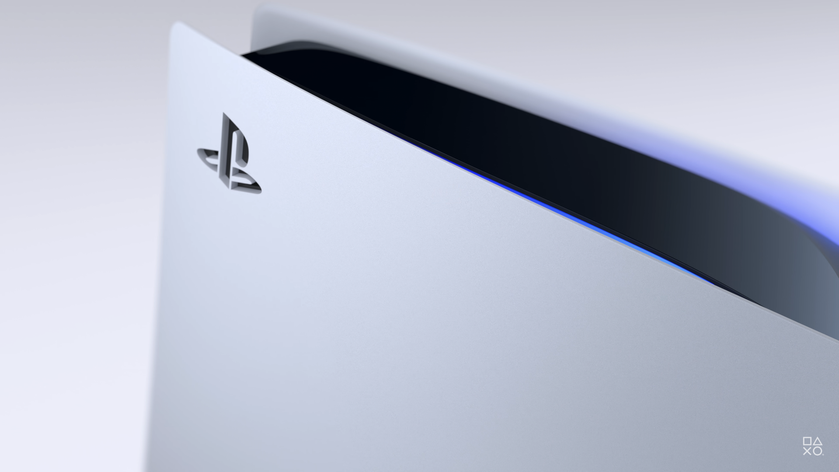

20.10.2020
В начале октября Sony показала геймерам внутренности PlayStation 5. Оказалось, что консоль охлаждает один 45-миллиметровый вентилятор. Теперь же инженер PS5 Ясухиро Оотори рассказал, как компания собирается улучшать работу системы охлаждения после релиза консоли.
В интервью для 4Gamer.net (via Eurogamer) Оотори объяснил, что Sony планирует выпускать системные обновления, которые, в том числе, будут улучшать работу кулера. Основываясь на данных процессора при работе с новыми играми, разработчики будут корректировать работу системы охлаждения, оптимизируя ее для конкретных проектов.
По словам Sony, на плате PlayStation 5 установлены датчики, которые считывают температуру системы и обеспечивают правильную работу вентилятора. Видимо, чем требовательнее будет игра, тем больше усилий придется прикладывать системе охлаждения.
Пока что первые тестеры PlayStation 5 не жаловались на шум или перегрев консоли. Да и сама Sony заявляет, что новая «игровая станция» будет тише PS4.